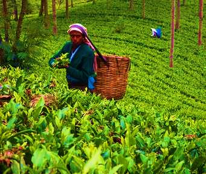

<p style="text-align: justify;">Sylhet Tea Garden is one of the beautiful places in Bangladesh.We see the greenery in every corner of the garden.Geographically, Sylhet stands on the banks of Surma River surrounded by Khasia and the Jaintia hills on the north, and the Tripura hills on the south. This hilly region adds a variation to the flat land Bangladesh. The terraced tea -gardens, winding mountainous rivers, thick tropical forest and country side extending to the horizon combine to make greater Sylhet a major tourist attraction of the country.Many tea leafs are grown here.That is economically helped the country.A visit to the tea plantation in Sylhet would be the memorable experience for any one. The gardens are relics from the days of the British Raj. The plantations were started by the British and the manager still live in white timber homes as they did in those days.The bungalows stand on huge beautifully maintained lawns and the service and lifestyle is preety much unchaged.</p>
